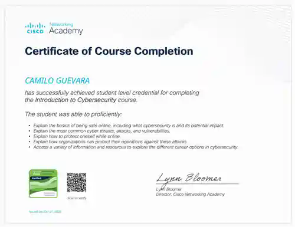
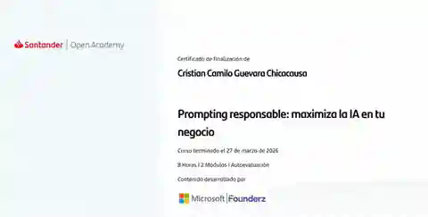

IFTS N.º 9
Tecnicatura Superior en Análisis de Sistemas
Requisitos, modelado, desarrollo, pruebas y arquitectura de sistemas.
SISTEMAS / SOFTWAREAPRENDER. CONSTRUIR. CONECTAR.
Hola, soy
PYTHON × DATA SCIENCE / IA × SISTEMAS
Conecto ideas con soluciones.
Estudio Análisis de Sistemas y Ciencia de Datos. Practico Python, estadística y análisis de información mientras avanzo hacia Machine Learning, modelado y predicciones, además de proyectos de software y ciberseguridad.
Análisis de sistemas
01 / SOBRE MÍ
Me interesa entender cómo funcionan las cosas y cómo hacer que funcionen mejor.
Mi recorrido académico comenzó en Ingeniería Topográfica y hoy continúa en Análisis de Sistemas y Ciencia de Datos. Conecto el análisis de requisitos, el desarrollo y la exploración técnica para abordar problemas desde distintas perspectivas.
Busco mis primeras oportunidades para aportar, colaborar y seguir aprendiendo en equipos tecnológicos.
camilo@portfolio:~$ perfil
Estudiante de Análisis de Sistemas
Estudiante de Ciencia de Datos
Desarrollo académico con Python
Aprendizaje práctico de ciberseguridad
// Aprendizaje continuo, aplicado a proyectos reales.
02 / HABILIDADES
Selecciona un área para explorar tecnologías y su contexto de uso.
03 / PROYECTOS
Ciencia de datos aplicada. Publiqué Titanic Survival Analytics (ETL, EDA y ML educativo) y Casino Estadístico (simulación Monte Carlo, inferencia y calibración). Sigo desarrollando competencias en evaluación y validación de modelos.
CÓDIGO ABIERTO
04 / FORMACIÓN EN CURSO
Un recorrido académico en construcción, con intención y práctica.
IFTS N.º 9
Requisitos, modelado, desarrollo, pruebas y arquitectura de sistemas.
SISTEMAS / SOFTWAREUNIVERSIDAD TECNOLÓGICA NACIONAL
Formación en Python, estadística, probabilidad y análisis exploratorio de datos; aprendizaje progresivo de Machine Learning, modelado y predicciones.
DATOS / ANÁLISISUNIVERSIDAD DISTRITAL
Siete semestres cursados. Una base analítica que forma parte de mi recorrido.
FORMACIÓN NO FINALIZADA05 / CERTIFICACIONES
Formaciones finalizadas con respaldo documental, distintas de los estudios actualmente en curso.

Cisco Networking Academy
Certificado de finalización del curso introductorio de ciberseguridad. Complementa mi formación en sistemas y las prácticas académicas de redes y seguridad de CyberLab.

Santander Open Academy · Contenido desarrollado por Microsoft y Founderz.
Formación completada de 8 horas, organizada en 2 módulos y autoevaluación. Acreditación de formación en prompting responsable e inteligencia artificial; no es un título de ingeniería.
Certificado oficial disponible a solicitud. Número de serie registrado en el documento original.
05 / EXPLORA MI PERFIL
Un asistente de consulta para conocer mi recorrido.
Hola. Explora las preguntas para conocer la formación, los proyectos y los intereses de Camilo.
Respuestas predefinidas a partir de este perfil. No utiliza IA generativa ni envía tus consultas a un servidor.
06 / HABLEMOS
Abierto a primeras oportunidades, colaboraciones y proyectos tecnológicos.